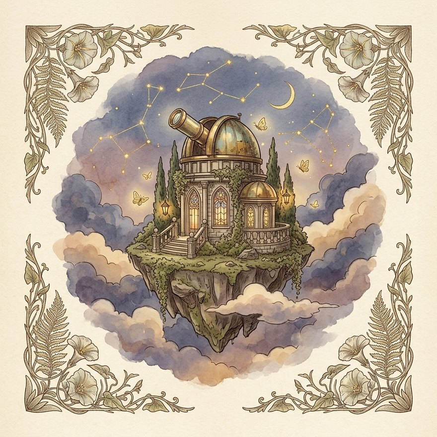
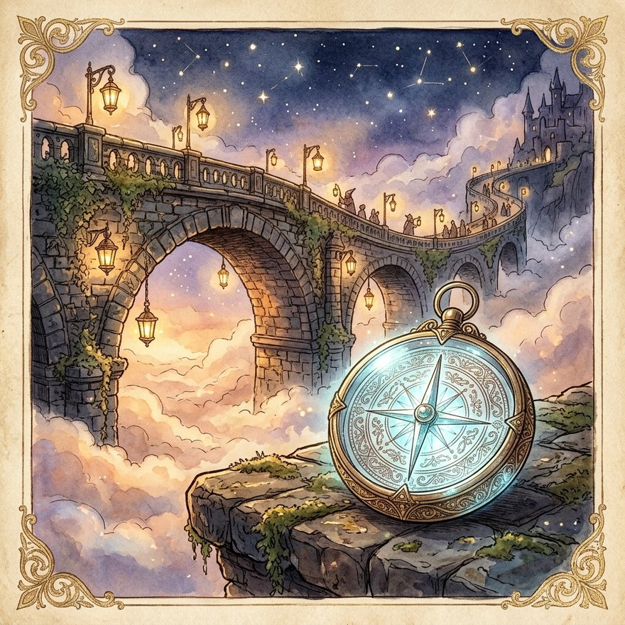

Crónicas de Luz y Papel
EL CÓDICE
ESTELAR
Ex Libris
«Para quienes miran la pantalla y no ven solo código, sino puertas hacia mundos que aún no existen.»
TOMO I · MMXXVIEste códice fue forjado en HTML, CSS 3D e ilustraciones generadas por inteligencia artificial como una prueba viva de que las páginas digitales también pueden sentirse reales.
«Para quienes miran la pantalla y no ven solo código, sino puertas hacia mundos que aún no existen.»
TOMO I · MMXXVIAntes de que las estrellas tuvieran mapas, los viejos cartógrafos descubrieron que una idea frágil podía sobrevivir siglos si se ataba con tinta, paciencia y un poco de oro. Así nació el primer códice: no para guardar respuestas definitivas, sino para encender preguntas.
Quien abre estas hojas percibe primero el rumor leve del papel y luego el brillo quieto de las constelaciones. Cada página es un umbral; basta un gesto para cruzar al siguiente capítulo.

En la torre más alta del observatorio no existían relojes. Solo descansaba una brújula tallada en cristal que jamás señalaba el norte: apuntaba siempre hacia aquello que su portador deseaba crear con mayor fuerza.
Los aprendices aprendían pronto el secreto del instrumento. Si dudaban, la aguja giraba en círculos sin reposo; pero cuando imaginaban un puente, una ciudad o una melodía nueva, el cristal ardía con una calma dorada y trazaba el rumbo exacto en el aire.
Más allá de la última nube se alzaba un arco de piedra antigua iluminado por faroles flotantes. Nadie recordaba quién colocó el primer sillar, pero todos sabían que cada viajero añadía una chispa nueva al cruzarlo.
Al llegar a la mitad del puente, el cielo dejaba de ser distancia y se volvía taller: allí las ideas cobraban volumen, textura y movimiento, listas para ser compartidas con cualquiera que siguiera la luz.

Si has llegado hasta aquí, ya comprobaste la magia de este pequeño experimento: en pocos minutos una idea se convirtió en volumen 3D, tinta, ilustraciones originales y una página viva publicada en la web.
Las páginas que siguen aún están en blanco, esperando tus próximos proyectos, juegos, historias o universos interactivos.